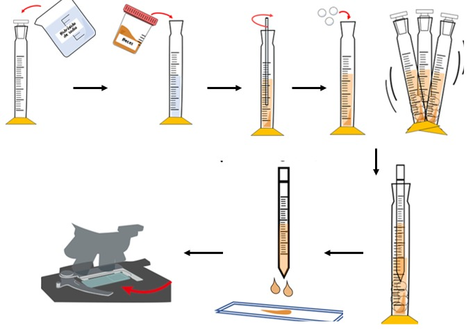
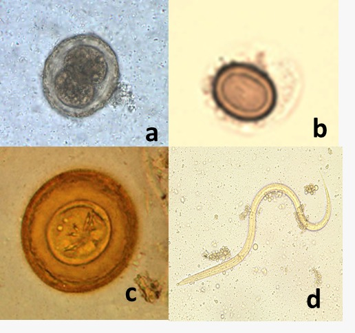

Consiste en obtener una suspensión homogénea de muestra de materia fecal e hidróxido de sodio 0.1 N (≈15:1) (se agregan perlas de vidrio para agitar). Se dejan precipitar los huevos y restos y se coloca con un aplicador (pipeta de Stoll) una gota grande (0.15ml) de muestra en un portaobjetos para su posterior observación microscópica y recuento de los parásitos. (OPS, 2019) (Sara Ortigoza Gutiérrez, Martha Cruz Aguilar, 2011)
Fundamento
•Se basa en los principios de saponificación, homogenización y aclaración. El NaOH 0.1 N al ponerse en contacto con las grasas de las heces se saponifica, hace que los huevos de los parásitos sean menos pegajosos, desinfecta y desodoriza la muestra, sirve para aclaración de detritus de la muestra con ello es fácil hacer la extracción y el (Sara Ortigoza Gutiérrez, Martha Cruz Aguilar, 2011)
La estimación (huevos por gramo) obtenida variará según la consistencia de las heces. Los
valores de corrección que deben usarse para convertir la estimación son:
x 1,5 para deposición formada
x 2 para deposición semiformada
x 3 para deposición semilíquida
x 4 para deposición líquida. (Martinez. V, 2012)

Hematología clínica, (2022), preparación técnica de Stoll.
Puntos críticos
•Se usa para helmintiasis severas.
•Debido a que la cantidad de muestra es muy pequeña en
comparación con el volumen de hidróxido de sodio, las helmintiosis moderadas o leves son más
difíciles de evaluar
•Los recuentos de huevos en muestras líquidas generalmente no son seguros; los recuentos más precisos son los obtenidos de muestras formadas o semiformadas.
•El factor por el que se multiplican los huevos contados cambia dependiendo de la consistencia de la materia fecal.
Parásitos detectables
Ascaris lumbricoides, Trichuris trichiura, Strongyloides stercoralis, Enterobius vermicularis, Necator americanus y Ancylostoma duodenale
Hympenolepis nana, Hymenolepis diminuta, Taenia saginata, Taenia solium. (Sara Ortigoza Gutiérrez, Martha Cruz Aguilar, 2011)

CDC: a) Huevo fecundado de A. lumbricoides, b) Huevo de Taenia sp., c) Huevp de H. diminuta, d)Larva filariforme de S.stercoralis